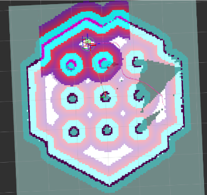

This project features the implementation of Simultaneous Localization and Mapping (SLAM) configurations mapped directly onto a 6-wheeled mobile rover platform within simulated environments. By moving entirely away from active LiDAR configurations, the tracking array utilizes camera sensors to construct spatial loops.
Autonomous Systems & Perception
Using ROS2 nodes tied to RTAB-Map interfaces, the rover parses image and depth arrays concurrently to handle localization and environmental feature extraction:
-
3D Perception Pipeline
Engineered a continuous 3D mapping and localization loop processing simulated point clouds. This data is fed directly via a virtual Intel RealSense D455 depth camera plugin to compute dense 3D point clouds and trace occupancy grids.
-
Nav2 Stack Integration
Configured the Nav2 navigation stack to parse the generated SLAM maps dynamically. This allows the system to calculate precise end-destination goal vectors and execute global path planning routines within structural corridors.
-
Clock Synchronization
Synchronized simulation clock timing parameters across active ROS2 nodes. Eliminating discrepancies here prevents localization drifting and ensures tight data alignment between virtual camera sensor streams and the mapping engine.

- Dark Obstacles : The black/teal zones represent literal physical walls and pillars where collisions are certain.
- Red Inflation Layer : Bright red rings act as a strict chassis-clearance buffer to keep the robot's outer edge from scraping obstacles.
- Purple/Pink Safety Gradient : These fading hues apply a soft penalty cost that pushes the pathfinder toward wider, safer gaps.
- White Free Space (Zero Cost) : The solid white grid marks open, optimal terrain where the planned trajectory can snake smoothly.
Loop Closure Diagnostics
Through real-time feature point tracking, the architecture detects previously visited locations to assert loop closures. This system corrects accumulating odometry errors instantaneously, maintaining global coordinate map integrity even during long exploration runs within the Gazebo environment.Through real-time feature point tracking—visible as the dense cluster of green tracking indicators over key geometric structures in the simulation monitor—the architecture continuously registers unique visual landmarks. By evaluating these point matrices against historical frame pairs, the system detects previously visited locations to assert loop closures. This corrects accumulating odometry errors instantaneously, maintaining global coordinate map integrity even during long exploration runs.